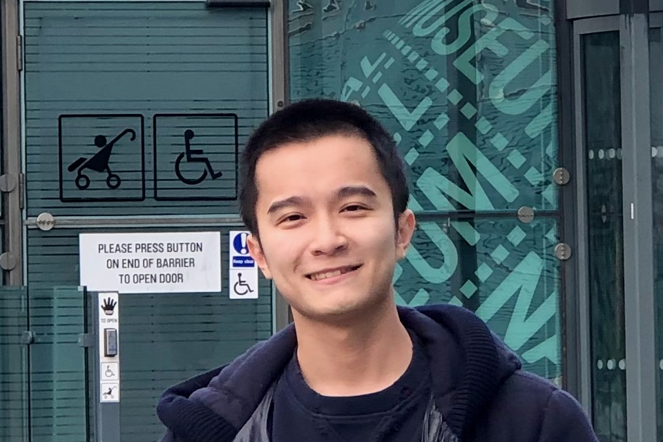

|
 |
Jinhong Lu(陆劲鸿)
Hi, I am a Third year PhD student supervised by Hiroshi Shimodaira at the University of Edinburgh. email: jinhong.l@ed.ac.uk [Google Scholar] |
Experience
| University of Edinburgh | Sep 2018 | - | present | PhD student |
| Sep 2015 | - | May 2018 | BEng Computer Science, Second Upper | |
| YY Inc | May 2018 | - | Aug 2018 | Speech Algorithm Engineer(Intern) |
Publications
-
PREDICTION OF HEAD MOTION FROM SPEECH WAVEFORMS WITH A CANONICAL-CORRELATION-CONSTRAINED AUTOENCODER
Jinhong Lu and Hiroshi Shimodaira
arXiv preprints (Accepted by Interspeech2020) [pdf]
-
A neural network based post-filter for speech-driven head motion synthesis
Jinhong Lu and Hiroshi Shimodaira
arXiv preprints [pdf]
Teaching Activities
| Tutor: | Machine Learning Project |
| Lab Demonstrator: | Inf2b - LEARNING |
| Marker: | Inf2b - LEARNING |
| Introductory Applied Machine Learning | |
| Machine Learning Project | |
| Teaching Assistant: | Inf2b - LEARNING |
Personal
I enjoy cooking. I am learning photography. I used to play Werewolf.My dog is called Tako.

Last Updated: 6 Sep 2020.